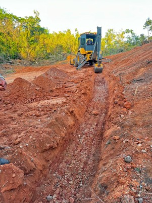

21 Definição
22 Soluções Baseadas na Natureza
As Soluções Baseadas na Natureza (Nature-based Solutions, NBS) são definidas pela IUCN como
Ações para proteger, gerenciar de forma sustentável e restaurar ecossistemas naturais ou modificados, que abordam desafios sociais de forma eficaz e adaptativa, fornecendo simultaneamente benefícios para o bem-estar humano e para a biodiversidade. (IUCN, 2020)
Essa definição estabelece que uma intervenção somente se qualifica como NBS quando opera simultaneamente em dois eixos: resolver um desafio social concreto (controle de erosão, mitigação de enchentes, segurança hídrica) e gerar ganho líquido para a biodiversidade. A bioengenharia de solos, conforme apresentada ao longo deste livro, atende integralmente a esse duplo requisito, pois utiliza elementos vivos (vegetação, raízes, fibras naturais) como componentes estruturais que, ao mesmo tempo em que estabilizam taludes e controlam feições erosivas, criam habitat, promovem ciclagem de nutrientes e sequestram carbono.
22.1 Enquadramento Conceitual
O diagrama a seguir posiciona a bioengenharia de solos no campo mais amplo das NBS, evidenciando que ela é uma vertente da engenharia ecológica (aplicação de princípios ecológicos ao projeto de intervenções de engenharia), que por sua vez integra o guarda-chuva conceitual das NBS juntamente com a restauração de ecossistemas, a infraestrutura verde e a adaptação baseada em ecossistemas.
22.2 Critérios IUCN para NBS
A IUCN estabelece 8 critérios que qualificam uma intervenção como NBS (IUCN, 2020), e cada um deles pode ser diretamente associado às técnicas de bioengenharia de solos apresentadas nos capítulos anteriores. A Tabela 22.1 sintetiza cada critério e apresenta um exemplo concreto de como a bioengenharia de solos o satisfaz.
| # | Critério | Aplicação em bioengenharia de solos |
|---|---|---|
| 1 | Aborda desafios sociais | O controle de erosão protege estradas, infraestrutura e comunidades rurais a jusante |
| 2 | Design em escala de paisagem | O projeto integrado de bacias hidrográficas (Capítulo 10) considera a conectividade hidrossedimentológica |
| 3 | Ganho líquido para biodiversidade | Espaços entre pedras de enrocamento e células de gabiões criam habitat (Capítulo 14, Capítulo 16) |
| 4 | Economicamente viável | Custos 3–5× menores que engenharia civil convencional (Tabela 22.2) |
| 5 | Governança inclusiva | A fabricação de biotêxteis em comunidades rurais gera renda local (Capítulo 20) |
| 6 | Equilíbrio entre trade-offs | O dimensionamento equilibra estabilidade mecânica e permeabilidade hidráulica |
| 7 | Gestão adaptativa | O monitoramento contínuo permite ajustes nas técnicas ao longo do tempo |
| 8 | Sustentável e integrada | Após 3–5 anos de consolidação, a vegetação assume a função protetora sem necessidade de manutenção |
22.3 Bioengenharia como NBS
A bioengenharia de solos se qualifica plenamente como NBS porque opera exclusivamente com processos naturais como motores de estabilização, em contraste com a engenharia convencional que depende de materiais inertes (concreto, aço) cuja função é estritamente mecânica. O crescimento radicular incrementa a coesão efetiva do solo (ver modelo de Wu-Waldron em Capítulo 16), a interceptação vegetal da chuva reduz a energia cinética do splash, a ciclagem hidrológica pela evapotranspiração reduz a poropressão e estabiliza taludes, e a deposição de serrapilheira cria uma camada orgânica que protege a superfície e alimenta a atividade biológica do solo. Esses processos geram múltiplos co-benefícios (estabilidade geotécnica, conservação de biodiversidade, sequestro de carbono, valorização paisagística) e são autossustentáveis após a fase de consolidação (3–5 anos): diferentemente de um muro de concreto, que se deteriora progressivamente, uma encosta estabilizada por bioengenharia ganha resistência ao longo do tempo à medida que o sistema radicular se expande e a coesão do solo aumenta.
22.4 Análise Econômica
22.4.1 Custo-benefício de NBS vs. Engenharia Convencional
A Tabela 22.2 apresenta uma análise comparativa de custos para estabilização de encostas, incluindo custo inicial, manutenção anual, vida útil e Valor Presente Líquido (VPL) em horizonte de 20 anos (taxa de desconto de 8% a.a.). Os valores demonstram que as técnicas de bioengenharia apresentam custos iniciais sistematicamente inferiores aos das soluções convencionais, e o diferencial se amplifica quando a manutenção ao longo da vida útil é contabilizada, pois a vegetação consolidada requer apenas manejo periódico (roçada, replantio pontual) enquanto estruturas de concreto demandam reparos progressivamente mais caros.
| Intervenção | Custo inicial (R\(/m²) | Manutenção anual (R\)/m²) | Vida útil (anos) | VPL 20 anos (R$/m²) | |
|---|---|---|---|---|
| Muro de concreto | 800–1.500 | 40–80 | 30–50 | 1.400–2.700 |
| Gabião metálico | 400–700 | 20–50 | 25–40 | 700–1.300 |
| Gabião vivo (Capítulo 16) | 250–500 | 10–25 | 30–50+ | 400–850 |
| Parede Krainer (Capítulo 17) | 200–450 | 5–15 | 25–40+ | 280–650 |
| Paliçadas + revegetação (Capítulo 9) | 50–150 | 5–10 | 10–20 | 80–250 |
| Biomantas + hidrossemeadura (Capítulo 13, Capítulo 12) | 30–80 | 2–8 | 3–8 | 45–130 |
22.4.2 Co-benefícios valorizáveis
Além da função primária de estabilização e controle de erosão, as NBS geram co-benefícios que podem ser monetizados e incorporados à análise de viabilidade econômica. O sequestro de carbono pela biomassa vegetal e pelo solo (2–15 tC/ha/ano, dependendo do bioma e das espécies) viabiliza a comercialização de créditos de carbono (R$ 40–120/tC no mercado voluntário). A regulação hídrica proporcionada pelo aumento de infiltração promove a recarga de aquíferos e reduz picos de cheia a jusante, benefícios que podem ser valorados pelo custo evitado de obras de drenagem urbana ou tratamento de água. A criação de habitat para fauna (polinizadores, predadores naturais de pragas agrícolas) gera serviços ecossistêmicos de biodiversidade com valor econômico real. A valorização estética da paisagem pode impulsionar turismo ecológico e valorização imobiliária, impactos mensuráveis pelo método de preços hedônicos.
DicaValoração de co-benefícios
Quando os co-benefícios são contabilizados pelo método de Análise de Custo-Benefício expandida (ACBe), as NBS frequentemente apresentam VPL superior às soluções convencionais, mesmo quando o custo inicial é semelhante. A análise deve adotar horizonte de pelo menos 20 anos para capturar os benefícios do amadurecimento da vegetação e da progressiva redução de custos de manutenção.
22.5 Retaludamento como NBS
O retaludamento vegetado é uma técnica de NBS que combina a reconfiguração geométrica do talude (redução do ângulo de inclinação) com a revegetação integrada das superfícies reconformadas, unindo princípios de geotecnia clássica (estabilidade por peso e geometria) com processos biológicos (coesão radicular, interceptação, evapotranspiração). A Figura 22.1 mostra um talude em campo antes da intervenção, com superfície exposta susceptível à erosão, ilustrando a condição típica que demanda reconfiguração geométrica seguida de revegetação.

22.5.1 Princípios
O retaludamento vegetado baseia-se em quatro princípios complementares. O primeiro é a redução do ângulo de inclinação do talude para valores inferiores ao ângulo de repouso do material, o que aumenta o fator de segurança por redução da componente de tensão cisalhante atuante. O segundo é a criação de bermas intermediárias a cada 5–8 m de altura, que funcionam como plataformas de captação de água e sedimentos, interrompendo o comprimento de rampa e reduzindo a energia do escoamento superficial. O terceiro é a revegetação das superfícies reconformadas com espécies de raízes profundas e fasciculadas, que incrementam a coesão do solo e reduzem a poropressão por evapotranspiração. O quarto é a implantação de sistema de drenagem naturalizado (canaletas verdes, conforme Capítulo 18), que conduz o escoamento interceptado pelas bermas sem gerar concentração erosiva.
22.5.2 Dimensionamento
A inclinação do talude retaludado deve atender ao fator de segurança mínimo de 1,5 contra ruptura por cisalhamento, calculado pela análise de estabilidade de taludes infinitos
\[ FS = \frac{\tau_f}{\tau_a} = \frac{c' + (\sigma - u) \tan \phi'}{(\gamma \cdot z \cdot \cos\beta) \cdot \sin\beta} \geq 1,5 \]
onde \(c'\) é a coesão efetiva do solo (kPa), \(\phi'\) é o ângulo de atrito efetivo (°), \(\sigma\) é a tensão normal atuante na superfície potencial de ruptura (kPa), \(u\) é a poropressão (kPa, dependente da posição do lençol freático), \(\gamma\) é o peso específico do solo (kN/m³), \(z\) é a profundidade da superfície de ruptura (m) e \(\beta\) é o ângulo de inclinação do talude com a horizontal (°).
A contribuição da vegetação à estabilidade é quantificada pelo incremento de coesão radicular (\(\Delta c_r\)), que se soma à coesão do solo
\[ c'_{total} = c'_{solo} + \Delta c_r \]
onde \(\Delta c_r\) é a coesão radicular adicional, calculável pelo modelo de Wu-Waldron conforme detalhado em Capítulo 16. Para gramíneas densas, \(\Delta c_r\) situa-se entre 2–5 kPa; para arbustos com raízes profundas, entre 5–15 kPa; e para espécies arbóreas com 3–5 anos, entre 10–25 kPa.
22.6 Casos de Aplicação em Regiões Tropicais
22.6.1 Semiárido brasileiro
No semiárido, o desafio central reside na pluviosidade concentrada em 3–4 meses, com chuvas convectivas de alta intensidade sobre solos rasos e vegetação de caatinga. A estratégia NBS para essas condições combina paliçadas de madeira nas feições erosivas lineares (Capítulo 9), bacias de captação para armazenamento descentralizado de enxurradas (Capítulo 10) e revegetação com espécies nativas xerófitas adaptadas ao déficit hídrico prolongado, complementada por Bio-SAP para retenção hídrica na zona radicular (Capítulo 21). Essa abordagem integrada tem demonstrado redução de escoamento superficial de 50–80% e aumento significativo de cobertura vegetal em parcelas experimentais.
22.6.2 Encostas da Mata Atlântica
Nas encostas da Mata Atlântica, a precipitação intensa (superior a 2.000 mm/ano), os solos profundos com mantos de intemperismo espessos e a susceptibilidade a movimentos de massa demandam soluções de maior robustez mecânica. A combinação de gabiões vivos na base das encostas (Capítulo 16), paredes Krainer nas zonas de maior solicitação (Capítulo 17) e revegetação com espécies arbóreas pioneiras de crescimento rápido tem promovido a estabilização de encostas com fator de segurança superior a 1,5 e regeneração florestal progressiva, com cobertura de dossel superior a 70% em 5 anos.
22.6.3 Margens do rio São Francisco
Nas margens do Baixo São Francisco, a erosão marginal acelerada pós-barragem (resultante da alteração do regime hidrológico natural pela operação de Xingó) em solos arenosos de baixa coesão constitui o principal desafio geomorfológico. A associação de enrocamento vegetado na linha d’água (Capítulo 14), biotêxteis de taboa na zona de variação de nível (Capítulo 20) e geotêxteis híbridos no talude superior (Capítulo 19) reduziu a taxa de recuo marginal em 70–90%, conforme dados de monitoramento topográfico por GNSS com levantamentos semestrais ao longo de 5 anos.
NotaNBS e ODS
As Soluções Baseadas na Natureza contribuem diretamente para os Objetivos de Desenvolvimento Sustentável 6 (Água limpa e saneamento), 11 (Cidades e comunidades sustentáveis), 13 (Ação contra a mudança global do clima) e 15 (Vida terrestre), consolidando a bioengenharia de solos como instrumento de política pública ambiental alinhado com compromissos internacionais.
22.7 Adaptação às Mudanças Climáticas
22.7.1 Projeções de Precipitação Extrema para Regiões Tropicais
Os cenários de mudanças climáticas do IPCC (AR6, 2021) projetam, para as regiões tropicais da América do Sul, um aumento na intensidade dos eventos extremos de precipitação de 10–30% até 2050 (cenário SSP2-4.5) e de 20–50% até 2100 (cenário SSP5-8.5), mesmo em regiões onde a precipitação média anual tende a diminuir. Essa aparente contradição (chuvas médias menores, porém eventos extremos mais intensos) resulta do aquecimento atmosférico, que aumenta a capacidade de retenção de vapor d’água em 7% por grau Celsius de aquecimento (relação de Clausius-Clapeyron), concentrando a precipitação em eventos menos frequentes porém mais violentos.
Para a bioengenharia de solos, essa projeção tem implicações diretas no dimensionamento. O fator de erosividade da chuva (\(R\) da RUSLE) pode aumentar em 15–40% nas próximas décadas, o que exige que as estruturas de contenção e dissipação sejam dimensionadas com fatores de segurança majorados. Em termos práticos, a chuva de projeto para dimensionamento de paliçadas, bacias de captação e canaletas verdes deve adotar período de retorno de 25–50 anos (em vez dos 10 anos usualmente empregados) e incorporar um fator de majoração climática (\(F_{cc} = 1{,}2\) a \(1{,}3\)) sobre a intensidade da chuva calculada a partir de séries históricas, conforme recomendações da WMO (World Meteorological Organization) para projetos com horizonte de projeto superior a 30 anos.
22.7.2 Resiliência Climática da Bioengenharia
A bioengenharia de solos apresenta vantagens intrínsecas de resiliência climática em relação à engenharia convencional, precisamente porque seus componentes vivos respondem adaptativamente às mudanças ambientais. As estruturas vegetativas se adaptam autonomamente (o aprofundamento radicular em resposta ao déficit hídrico aumenta a ancoragem em cenários de seca prolongada, enquanto o adensamento aéreo em resposta à maior pluviosidade amplia a interceptação de chuva). A redundância funcional proporcionada pela diversidade de espécies garante que, se uma espécie for prejudicada pela alteração climática, outras ocupem seu nicho funcional. A capacidade de autorreparação permite que a vegetação rebrote e restabeleça a cobertura após danos por eventos extremos, diferentemente de estruturas de concreto cuja ruptura é irreversível sem intervenção humana. Além disso, a flexibilidade estrutural dos materiais vivos e biodegradáveis absorve deformações e solicitações dinâmicas sem ruptura frágil (diferentemente do concreto, que rompe subitamente quando sua capacidade é excedida).
22.7.3 Sequestro de Carbono
A bioengenharia de solos contribui para a mitigação das mudanças climáticas por meio do sequestro de carbono em dois compartimentos. A biomassa aérea e radicular das espécies vegetais utilizadas nas intervenções sequestra 2–8 tC/ha/ano nos primeiros 10 anos (com taxas mais elevadas em espécies arbóreas de rápido crescimento como eucalipto e gliricídia), estabilizando-se em 0,5–2,0 tC/ha/ano após a maturidade. O carbono orgânico do solo (COS) aumenta pela decomposição de raízes finas, serrapilheira e biotêxteis biodegradáveis, com incrementos de 0,3–1,5 tC/ha/ano ao longo dos primeiros 20 anos, particularmente em solos tropicais com COS inicial depletado pela degradação.
A Tabela 22.3 sintetiza o potencial de sequestro de carbono das principais técnicas de bioengenharia, permitindo a estimativa de créditos de carbono para análise de viabilidade econômica.
| Técnica | Sequestro (tC/ha/ano) | Horizonte | Compartimento dominante |
|---|---|---|---|
| Revegetação com gramíneas | 1,0–3,0 | 5–10 anos | COS (raízes finas) |
| Revegetação arbórea (espécies nativas) | 3,0–8,0 | 10–30 anos | Biomassa aérea + COS |
| Enrocamento vegetado + mata ciliar | 2,0–6,0 | 5–20 anos | Biomassa + sedimento retido |
| Biomantas + hidrossemeadura | 0,5–2,0 | 2–5 anos | COS (biodegradação da manta) |
| Bio-SAP + geocompostos | 0,3–1,0 | 1–3 anos | COS (biodegradação do polímero) |
A monetização do carbono sequestrado pelos mercados voluntários de créditos de carbono (R$ 40–120/tC em 2025) pode representar receita adicional de R$ 200–600/ha/ano para projetos de bioengenharia com revegetação arbórea, constituindo um mecanismo de financiamento complementar que melhora a relação custo-benefício e favorece a viabilidade econômica de intervenções em larga escala.
22.8 Marco Regulatório e Certificação
22.8.1 Normas Brasileiras Aplicáveis
O projeto e a execução de obras de bioengenharia de solos no Brasil devem observar um conjunto de normas técnicas e regulamentos ambientais cuja conformidade é condição indispensável para aprovação por órgãos ambientais licenciadores e para financiamento por agências de fomento. No âmbito da ABNT, aplicam-se a NBR 11682 (Estabilidade de encostas, que define critérios de investigação geotécnica, análise de estabilidade e plano de monitoramento), a NBR 16308 (Biomantas e biotêxteis para controle de erosão, que classifica e especifica requisitos de desempenho para produtos de fibras naturais), a NBR 10514 (Gabiões e colchões reno, que regulamenta materiais, fabricação e montagem de cestas metálicas) e a NBR 7229 (Ensaio de infiltração, fundamental para o dimensionamento de bacias de captação e drenagem subsuperficial).
22.8.2 Legislação Ambiental
A legislação ambiental brasileira estabelece obrigações específicas que condicionam o projeto de bioengenharia. O Código Florestal (Lei 12.651/2012) define as Áreas de Preservação Permanente (APP) onde intervenções de revegetação e estabilização de encostas são obrigatórias, exigindo o uso de espécies nativas nos projetos de recomposição. A Política Nacional de Recursos Hídricos (Lei 9.433/1997) fundamenta a gestão por bacia hidrográfica, que é o paradigma espacial das intervenções de bioengenharia. A Política Nacional de Pagamento por Serviços Ambientais (Lei 14.119/2021) cria mecanismos de remuneração por atividades de conservação do solo e da água, incluindo o controle de erosão por bioengenharia, o que viabiliza o financiamento de projetos por propriedades rurais e municípios.
22.8.3 Certificações Internacionais
No âmbito internacional, as normas ISO 14001 (Sistemas de gestão ambiental) e ISO 14040/14044 (Avaliação do ciclo de vida, ACV) fornecem os frameworks para avaliar a pegada ambiental de materiais e técnicas de bioengenharia, subsidiando a comparação objetiva com soluções convencionais. A norma europeia EN 13383 (Armourstone, especificação de pedras para enrocamento) é referência para dimensionamento de enrocamento vegetado (ver Capítulo 14), enquanto a ASTM D6460 (Standard Practice for Determination of Rolled Erosion Control Product Performance) estabelece protocolos de ensaio para biomantas e geotêxteis.
DicaIncentivos financeiros
No Brasil, programas como o Programa de Conservação de Estradas Rurais (DER-SP), o Programa Produtor de Água (ANA) e o Programa de Recuperação de Áreas Degradadas (PRAD) oferecem financiamento e assistência técnica para implantação de técnicas de bioengenharia, constituindo oportunidades concretas para viabilizar projetos em escala municipal e de bacia hidrográfica.